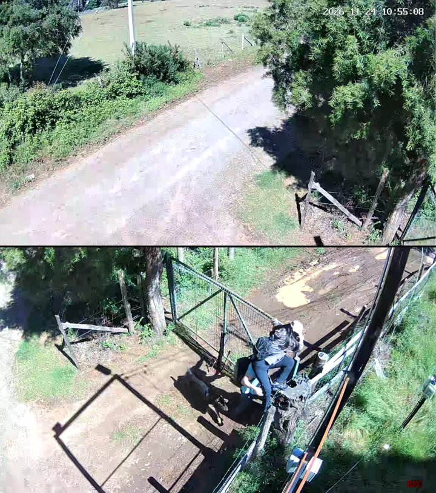
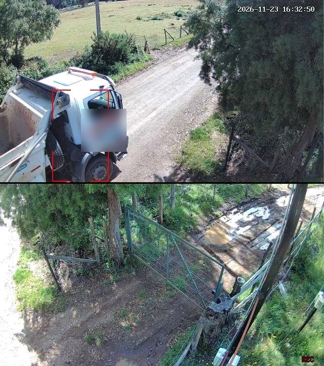
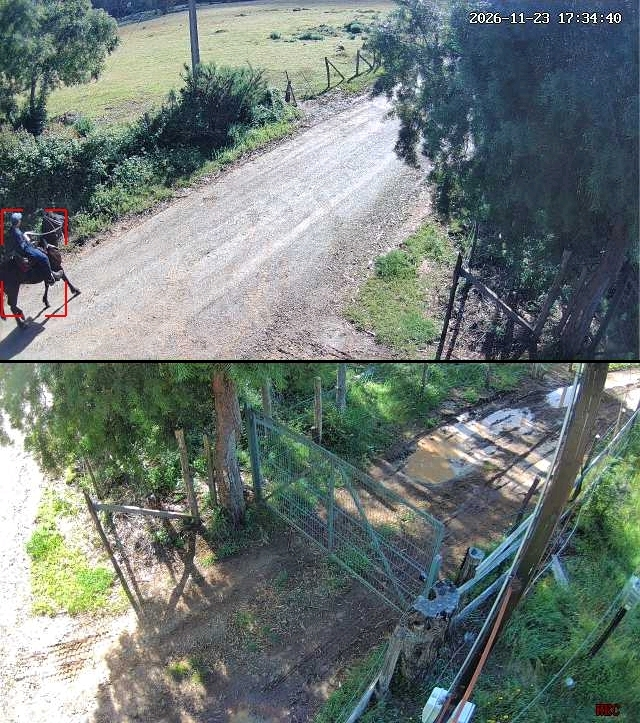
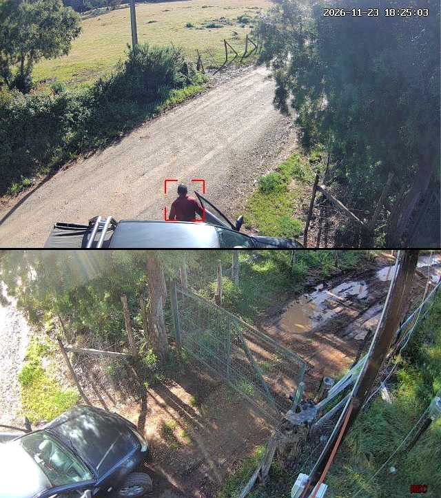
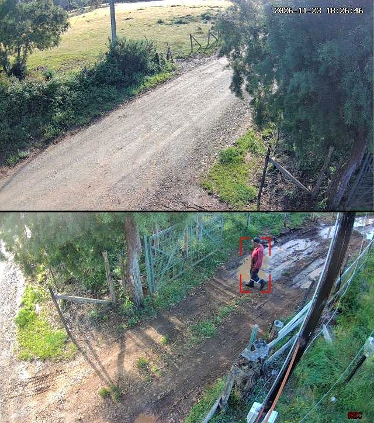
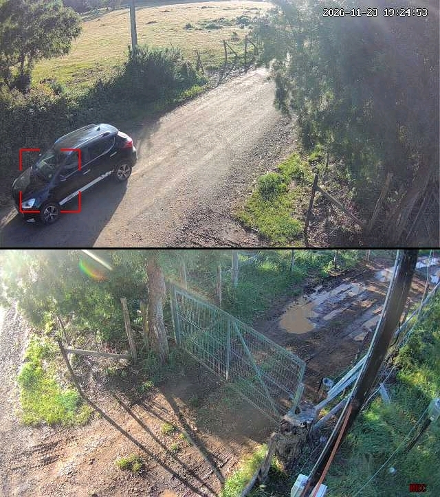
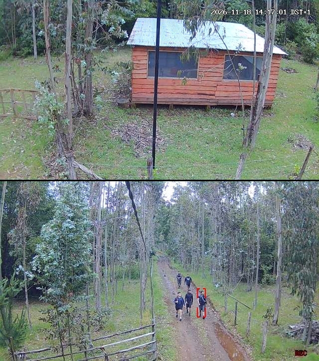
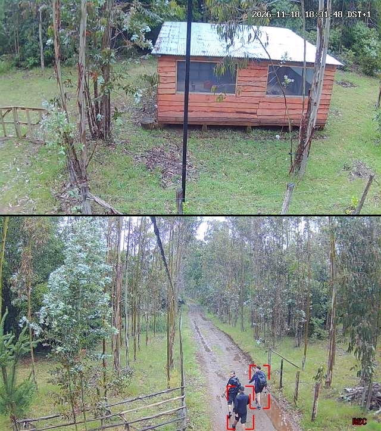
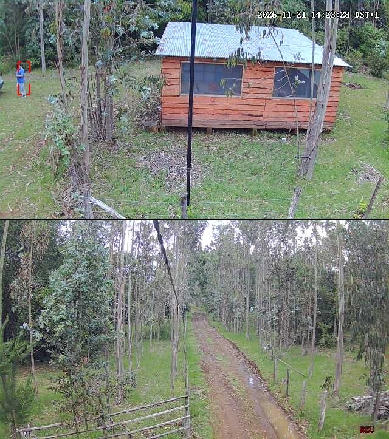
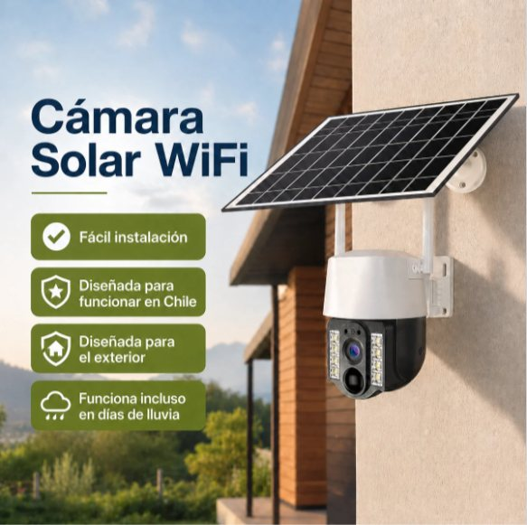

Videovigilancia profesional instalada en tu casa, parcela o campo
Suministro, instalación y configuración de cámaras IP con conectividad 4G LTE y alimentación fotovoltaica. Monitoreo remoto en tiempo real y notificaciones push a tu celular cuando el sistema detecta personas, sin depender de red eléctrica ni internet fijo.
Importante: el chip y el plan de datos móviles los aporta el cliente. Nosotros suministramos el equipo, lo instalamos y lo configuramos.
Instalación y puesta en marchaAutonomía solarConectividad 4G LTEAlertas push en tiempo real
Video realDetección humanoide con seguimiento automático del objetivo
Detección inteligente y alertas en tiempo real
Registros reales de equipos instalados en terreno: el acceso a un predio rural y una cabaña en zona boscosa. Ante la detección de una persona o un vehículo, el sistema delimita el objetivo con un recuadro, envía una notificación push a tu celular y almacena el evento con marca de fecha y hora.
Te avisa al celular cuando detecta personas
La cámara analiza la imagen y distingue la figura humana del resto del movimiento. Al detectar una persona, envía una notificación push al instante, estés donde estés. Desde la alerta ves la transmisión en vivo o la grabación del evento.
Nexus Cam · ahoraPersona detectada · Acceso principalToca para ver en vivo
Nexus Cam · hace 3 minPersona detectada · Sendero cabaña
Ejemplo ilustrativo de notificación
Seguimiento continuo del objetivoVideo real · 18:31Registro completo del eventoVideo real · 18:34
Detección, seguimiento y zoom automáticoVideo real · sendero cabaña · 17:36Auto-tracking PTZ: el lente gira y los sigueVideo real acelerado 8x · acceso principalIngreso por el portón, registrado completoVideo real acelerado 6x · acceso principalDetecta personas, no solo movimientoVideo real · sendero cabaña, con perros en escena

Persona cruzando el portón10:55 · evento en el acceso principal

Camión frente a la entrada16:32 · detección de vehículo pesado

Jinete en el camino17:34 · detección a larga distancia

Persona baja de un vehículo18:25 · evento en el acceso principal

Persona en el portón18:26 · captado por el segundo lente

Auto que llega19:24 · detección de vehículo

Grupo por el senderoCabaña en el bosque · 14:17

Detección múltiple simultáneaCabaña en el bosque · 18:31

Persona junto a la cabañaCabaña en el bosque · 14:23
Óptica dual: dos vistas simultáneas en una sola transmisión, por ejemplo la cabaña arriba y el sendero de acceso abajo. Detección efectiva incluso en los bordes del campo visual.
Equipos disponibles, instalados y configurados
Tres soluciones según el sitio: enlace WiFi cuando existe red local, o conectividad 4G LTE con alimentación solar para potreros, bodegas, accesos y zonas sin suministro eléctrico.

Solar + WiFi
Cámara solar WiFi
Para viviendas o parcelas con cobertura WiFi. Alimentación fotovoltaica autónoma, sin cableado eléctrico.
Panel fotovoltaico de 9 W, operación 100% autónoma
Domo PTZ motorizado: 340° horizontal y 90° vertical
Visión nocturna IR con modo color inteligente
Audio bidireccional con micrófono y altavoz integrados
Valores con instalación incluida: suministro del equipo, montaje, configuración de la app y puesta en marcha. El chip y el plan de datos móviles los aporta el cliente.
Agrega tu memoria microSD
Almacenamiento local de grabaciones y eventos. Se entrega instalada y formateada el día de la puesta en marcha, sin costo adicional de instalación.
microSD 64 GB$29.900
microSD 128 GB$34.900
Metodología de trabajo
1
Solicitud de cotización
Indícanos el área a cubrir y su ubicación. Respondemos por WhatsApp con una propuesta técnica y económica.
2
Levantamiento técnico
Medimos la intensidad de señal 4G por operador en el punto de instalación para asegurar una transmisión estable.
3
Montaje e instalación
Fijación en muro o poste, orientación del panel fotovoltaico y ajuste del ángulo de cobertura.
4
Configuración y capacitación
Vinculamos el equipo a la app, activamos la detección de personas y las notificaciones push, y te capacitamos en visualización en vivo y reproducción de grabaciones.
Alcance del servicio
Entrega llave en mano: el sistema queda operativo, grabando y con las alertas activas.
Equipo nuevo. Cámara seleccionada con su kit de alimentación fotovoltaica.
Montaje en muro o poste. Fijación firme y orientación hacia la zona crítica a vigilar.
Configuración en tu celular. App instalada, cámara vinculada, detección de personas y notificaciones push activas.
Pruebas de funcionamiento. Verificación de imagen diurna y nocturna, audio, alertas y grabación.
Soporte postventa. Asistencia técnica remota por WhatsApp.
Instalamos en la Región del Biobío y alrededores
Instalaciones en viviendas, parcelas y predios rurales de la región y comunas aledañas. Para ubicaciones fuera de la zona, consulta disponibilidad.
Provincia de ConcepciónProvincia de AraucoProvincia de BiobíoComunas cercanas: consultar
Preguntas frecuentes
¿Me avisa al celular cuando alguien entra?+
Sí. Cuando el sistema detecta una persona en el área vigilada, envía una notificación push a tu celular en tiempo real. Desde la misma alerta accedes a la transmisión en vivo o a la grabación del evento.
¿Necesito internet en mi casa?+
Solo la cámara solar WiFi: requiere que la red WiFi tenga cobertura en el punto de instalación, sin necesidad de enchufe. Los modelos con chip operan con conectividad 4G LTE, sin internet fijo.
¿Qué chip uso?+
El chip y su plan de datos los aporta el cliente: puede ser de Entel, Movistar, Claro o WOM. En el levantamiento técnico te indicamos qué operador entrega mejor señal 4G en tu terreno, para que contrates el plan adecuado.
¿Funciona si en mi parcela hay poca señal?+
Requiere un nivel mínimo de señal 4G en el punto de instalación. Sin cobertura el equipo no puede transmitir, y lo verificamos antes de concretar la venta.
¿Qué pasa en invierno o con días nublados?+
La batería de litio almacena energía para operar con baja radiación solar. La autonomía depende de la cantidad de eventos detectados y de la exposición del panel, por eso optimizamos su orientación al instalar.
¿Dónde quedan las grabaciones?+
En la tarjeta microSD del equipo (grabación local), con reproducción remota desde tu celular. Te recomendamos la capacidad según los días de respaldo que necesites.
¿Desde dónde veo las cámaras?+
Desde la app del fabricante, gratuita para Android e iOS, con visualización en vivo, reproducción de grabaciones y notificaciones push. Queda configurada el día de la instalación.
Pide tu cotización
Completa el formulario y se abrirá WhatsApp con tu solicitud lista para enviar.